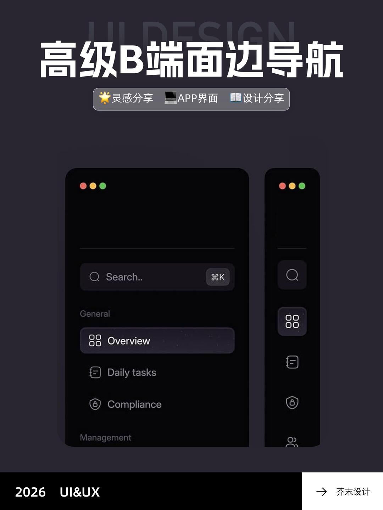
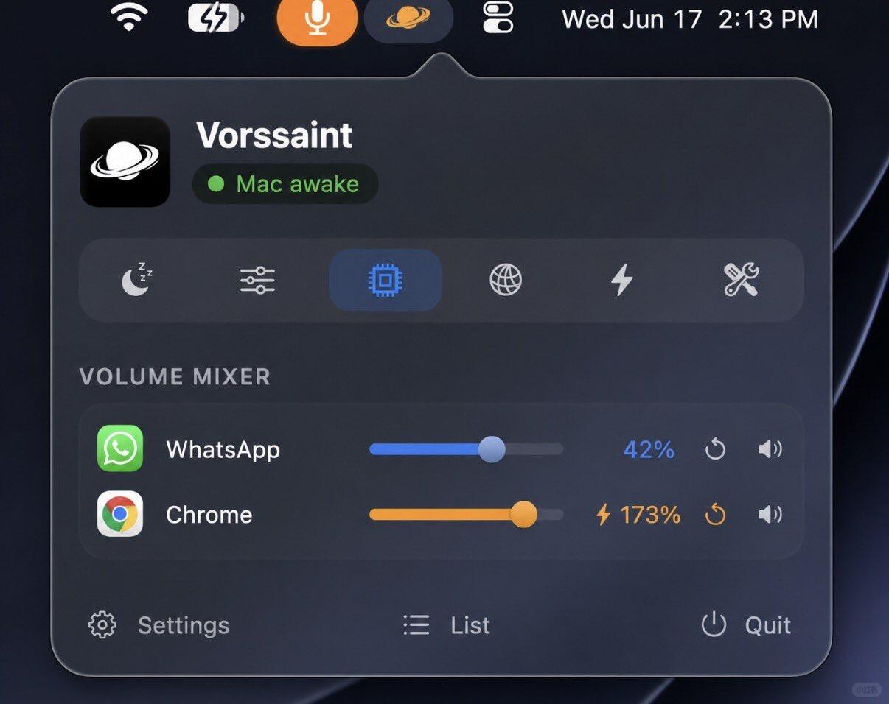
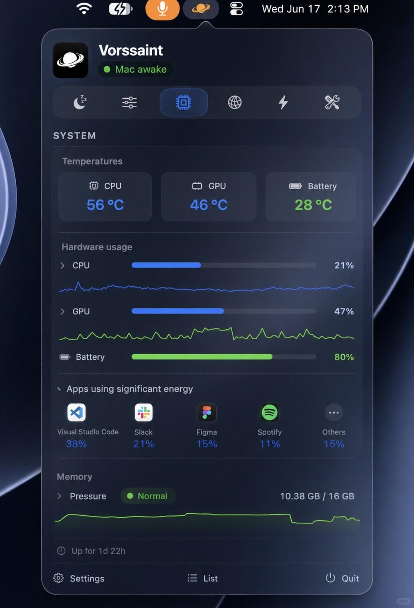

冷蓝玻璃与克制的亮色
侧栏结构采用图四，配色采用 Harbor 的冷蓝灰，整页层次参考 LeonAnd。 导航选中态和行高由共享导航组件统一提供，新增页面复用该组件。
已选侧栏与整页参考
两张图片各有固定用途：侧栏看结构，LeonAnd 看整页表面关系。具体颜色遵循 Harbor， 导航状态与尺寸遵循共享组件，其他侧栏示例不作为并行标准。
{kind=link}

{kind=link}
当前共享导航位于工作区模块的 PrimaryNavigation / NavigationButton，行高为 40 px。 新页面继承工作区导航；需要复用到其他位置时，从现有实现提取共享组件。此页记录设计选择， 不代表界面已经按参考完成改造。
玻璃与颜色参考
外部视觉参考，画面中的软件名称为 Vorssaint。图片按原文件保存，点击可查看大图。
{kind=link}

{kind=link}

Harbor 候选色板
以下色值供试做与比较，尚未应用到软件，也未从图片中精确取样。 浅色板最初由 Vorssaint 的深色参考推导，LeonAnd 补充浅色表面的层次参考。 每个半透明色块都叠在本栏的基础背景上，实际效果会随背后内容变化。
深色 · 冷蓝炭灰
深底保持安静，柔和蓝灰承接背景光感，亮色集中在操作和状态。
-
基础背景
#172131 -
主玻璃填充
#28364B / 64% -
内容分组填充
#DCE8FF / 6% -
浮层填充
#2B3A51 / 72% -
主要文字
#EDF3FA -
次要文字
#AAB7C9 -
弱化图标
#7D8CA2 -
细边界
#DCE8FF / 12% -
边缘高光
#FFFFFF / 18% -
主色
#66AAFF -
强调控件选中底色
#66AAFF / 16% -
悬停底色
#EDF3FA / 6% -
成功
#63C77D -
警告
#E9B96B -
错误或破坏性操作
#F17983 -
已合并
#BC9BEF
浅色 · 冷白与淡蓝灰
沿用相同的语义，用较深的文字与主色保持浅色表面的清晰度。
-
基础背景
#EEF2F7 -
主玻璃填充
#F4F7FC / 68% -
内容分组填充
#FFFFFF / 40% -
浮层填充
#F8FAFD / 78% -
主要文字
#202B3A -
次要文字
#607085 -
弱化图标
#7B8899 -
细边界
#263A54 / 12% -
边缘高光
#FFFFFF / 72% -
主色
#2768D3 -
强调控件选中底色
#2768D3 / 10% -
悬停底色
#202B3A / 5% -
成功
#257A46 -
警告
#90610D -
错误或破坏性操作
#C64250 -
已合并
#8055B9
主色用于链接、焦点和少量选中控件。成功、警告、错误和已合并各有语义，不扩展成页面装饰色。这里展示颜色分工；实际玻璃效果还需结合模糊、背景和原生窗口验证。